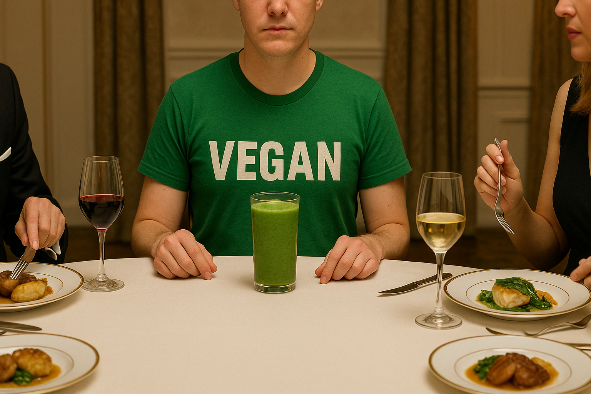

Vegan Protein Powder for Meal Replacement
A true meal replacement has to do more than slam protein; it has to cover macros, fiber, and micronutrients so you can skip a plate without skipping nutrition. Meta-analysis of twenty-two randomized trials shows diets that swap one or two meals a day for high-protein shakes edge out food-only plans for weight loss, especially when the replacement delivers at least twenty grams protein and a splash of fiber for satiety.*
Protein needs land around twenty-five to thirty grams to slow gastric emptying and keep ghrelin quiet. A 2020 crossover study comparing a protein shake to a whole-food breakfast found the shake lifted post-meal thermogenesis by nearly eight percent without harming fullness, hinting at an extra metabolic nudge.*
Carbs and fats still matter. Aim for at least ten grams complex carbs for glycogen top-up and five to seven grams healthy fat to ferry fat-soluble vitamins. Most off-the-rack vegan powders run one to three grams fat, so blend in half an avocado or a tablespoon of almond butter when you need longer-burn energy.
Micronutrients can’t fall through the cracks. B12, iron, iodine, and omega-3s often run low in vegan diets; quality meal-replacement powders fortify these gaps or add greens blends and algae oil. Garden of Life sprinkles twelve vitamins plus probiotics into every scoop, while KOS folds in digestive enzymes and coconut milk to coat the stomach.
Fiber keeps insulin smooth and hunger tame. Look for five grams or more per serving or add a spoon of ground flax. Soluble fiber thickens the shake, slows sugar absorption, and feeds gut bacteria—critical if you plan to swap two meals a day for liquid fare longer than a month.
Choose tubs that tick all those boxes and still taste like food.
- Orgain Organic Plant-Based Protein Powder: Twenty-one grams protein, five grams fiber, one gram sugar, plus a fruit-veggie blend so micronutrients don’t nosedive.
- KOS Organic Plant Protein: Twenty grams protein, six grams fat from coconut milk, four grams fiber, digestive enzymes, and monk-fruit sweetness.
- Garden of Life Raw Organic Protein: Sprouted pea-rice protein, probiotics, enzyme blend, vitamins A, D, E, K—all at 120 calories.
- Vega Sport Premium Protein: Thirty grams protein and five grams BCAAs with tart-cherry and turmeric for recovery.
- Naked Pea Protein: Twenty-seven grams single-ingredient protein at 120 calories—use as a blank canvas.